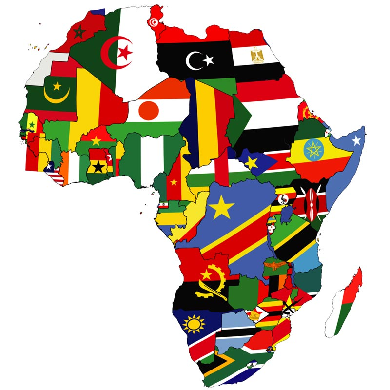

|  |
AFRICA |
||
| África es el tercer continente más extenso, tras Asia y América. Está situado entre los océanos Atlántico, al oeste, e Índico, al este. El mar Mediterráneo lo separa al norte del continente europeo; el punto en el que los dos continentes se hallan más cercanos es el estrecho de Gibraltar de 14.4 km de ancho. África es el tercer continente del mundo por extensión territorial y tiene más de mil millones de habitantes. Rodeada por el océano Atlántico y el Índico, además del mar Mediterráneo por el norte, África es una vasta masa de tierra que se extiende por 8.000 kilómetros de norte a sur y 7.500 de este a este. | |||